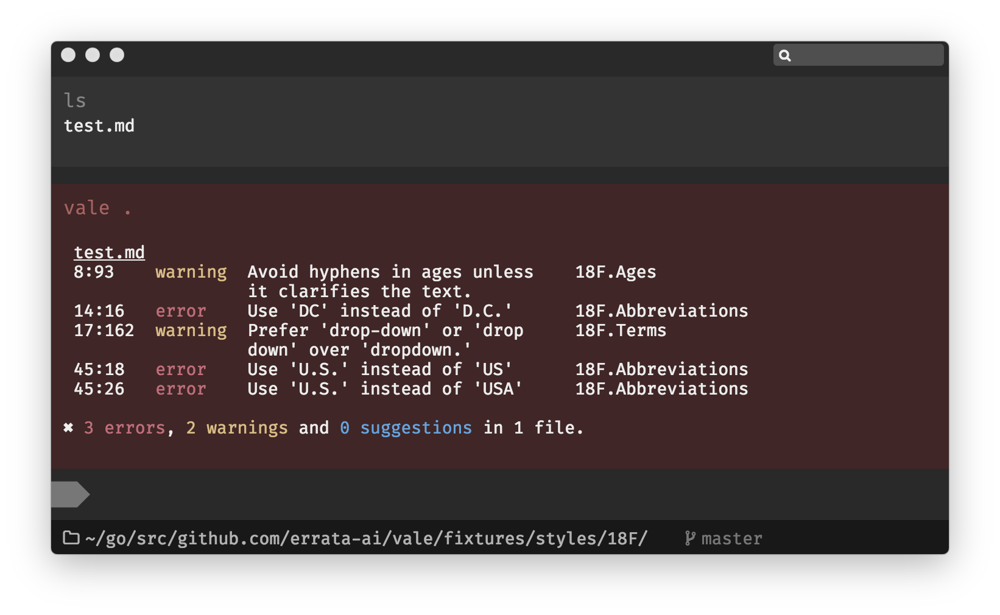

Getting Started
About¶
Vale is a free, open-source linter for prose built with speed and extensibility in mind.
Unlike most writing aids, Vale's primary purpose isn't to provide its own advice; it's designed to enforce an existing style guide through its YAML-based extension system.
No matter if you're working with a small in-house standard or a large editorial style guide, Vale will help you maintain consistent and error-free writing.

Installation¶
Vale runs on Windows, macOS, and Linux. It can be installed via one of the package managers listed below or manually by downloading an executable from the releases page.
Quickstart¶
After installing Vale via one of the options listed above, you'll need to create a configuration file:
# This goes in a file named either `.vale.ini` or `_vale.ini`. # # Alerts are assigned a level of suggestion, warning, or error. MinAlertLevel = warning # We only want to lint Markdown files. [*.md] # Vale comes with three built-in styles: write-good, proselint, and Joblint. # # Here, we specify that we want to enable all rules in the "write-good" style. BasedOnStyles = write-good
In this example, we're using Vale's built-in style for
write-good, but you can also create your
own styles.
Next, to verify that the installation was successful, we'll use the following example Markdown file:
## Getting Started Rule 1: Don't start sentences with "so": > So, this is an example sentence. Rule 2: Don't start a sentence with "there is" or "there are": > There are many ways to start a sentence.
Finally, let's run Vale and check its output:
# Our working directory contains our config file and the test Markdown file. $ ls -a . .. .vale.ini test.md $ vale test.md test.md 5:1 error Do not start a sentence with write-good.So 'So,' 9:1 error Do not start a sentence with write-good.ThereIs 'There are' 9:11 warning 'many' is a weasel word! write-good.Weasel ✖ 2 errors, 1 warning and 0 suggestions in 1 file.
See Usage for more information about using the command-line interface.